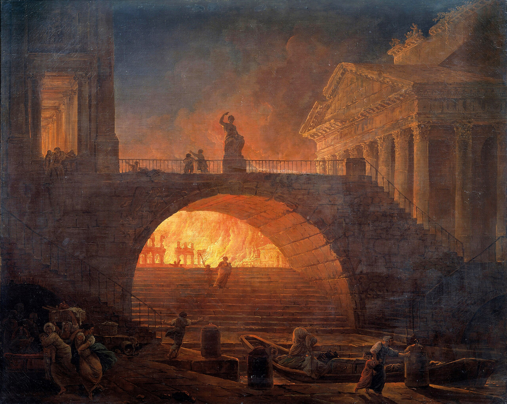
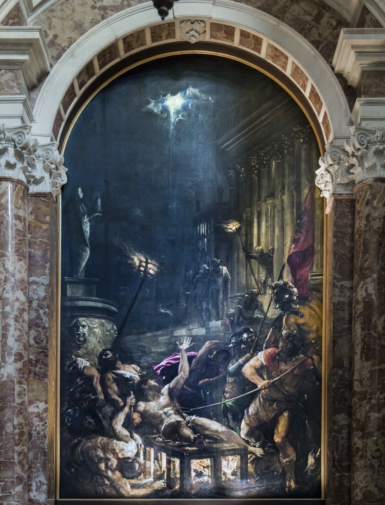

Le feu et son impact dans la culture de l'humanité
Par la place importante du feu dans la vie des hommes de toutes les époques, le feu a inspiré de nombreux mythes et de nombreux artistes
Dans la religion et les mythologies
Dans la mythologie grecque, le feu est apporté aux hommes par Prométhée.
Les Juifs allument une hanoukkia lors de la fête de Hanoucca, et ont coutume d'allumer le handil à certaines occasions.
Les Chrétiens allument des cierges dans les églises catholiques et orthodoxes.
Les Musulmans différencient deux types de feux (mentionnés dans le Coran) : le feu des Enfers et le feu domestique.
Les Hindouistes pratiquent couramment les sacrifices dans le feu, comme les offrandes de beurre clarifié.
Les Bouddhistes et les Hindouistes pratiquent tous deux la crémation par le feu des défunts.
Les symboliques culturelles du feu
En alchimie, le feu fait partie des 4 éléments de base.
Le feu est couramment associé au Soleil et aux Volcans.
Le feu a une portée juridique, ce qui explique l'utilisation du bucher en tant qu'instrument de justice, qui purifie et renouvelle.
Le feu représente également la passion.
Dans les arts
dans la littérature
Le feu est très présent dans de nombreux textes mythologiques et religieux. Il est mentionné à quelques reprises dans L'Iliade et le feu de l'enfer est une thématique importante de la Divine Comédie de Dante Alighieri.
dans la peinture
Le feu a souvent été représenté dans la peinture.
Elle a permis de rapporter des scènes frappantes, comme Le Grand Incendie de Rome, 18 juillet 64 apr. J.-C. peint en 1785 par H. Robert
Le Grand Incendie de Rome par H.Robert
ou d'accompagner un évènement religieux comme Le Martyre de saint Laurent de Titian.

Le Martyre de saint Laurent par Titian
dans la musique
Grâce à sa symbolique importante, le feu a été omniprésent dans plusieurs composition musicales.
Ainsi, elle est présente dans Le Sacre du Printemps d'Igor Stravinsky ou plus récemment dans l'album Feu de Nekfeu, son premier.dans le cinéma
Le feu est un élément marquant et possède une valeur cinématographique importante.
Dans le film Apocalypse Now de Francis Ford Coppola, le feu permet de créer de l'action et des effets impressionnants. Dans le Le Seigneur des Anneaux de Peter Jackson, le feu illustre la puissance du Balrog de Khazad-Dûm. Les montagnes du Mordor paraissent flamboyants et fumants, ce qui insiste sur leur dangerosité et leur puissance.